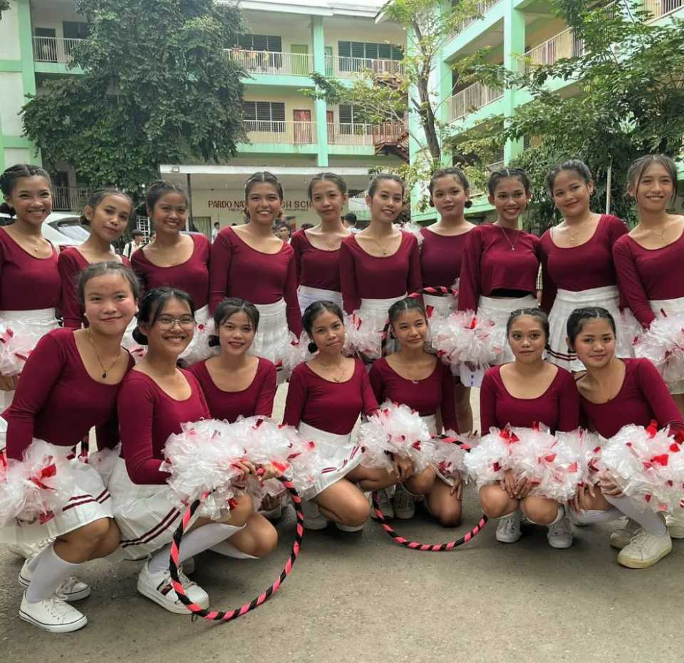
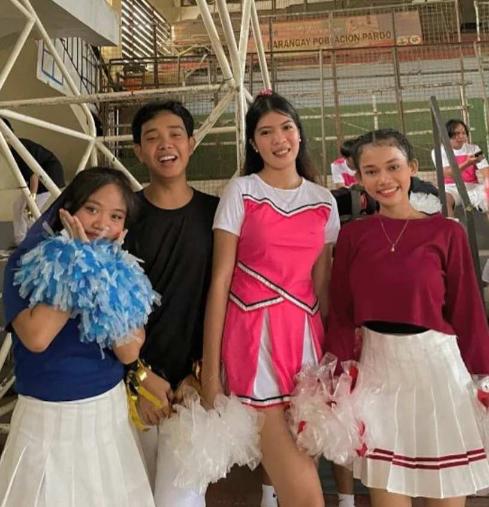
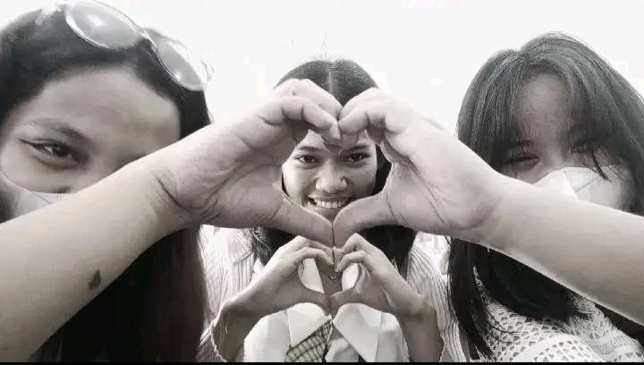
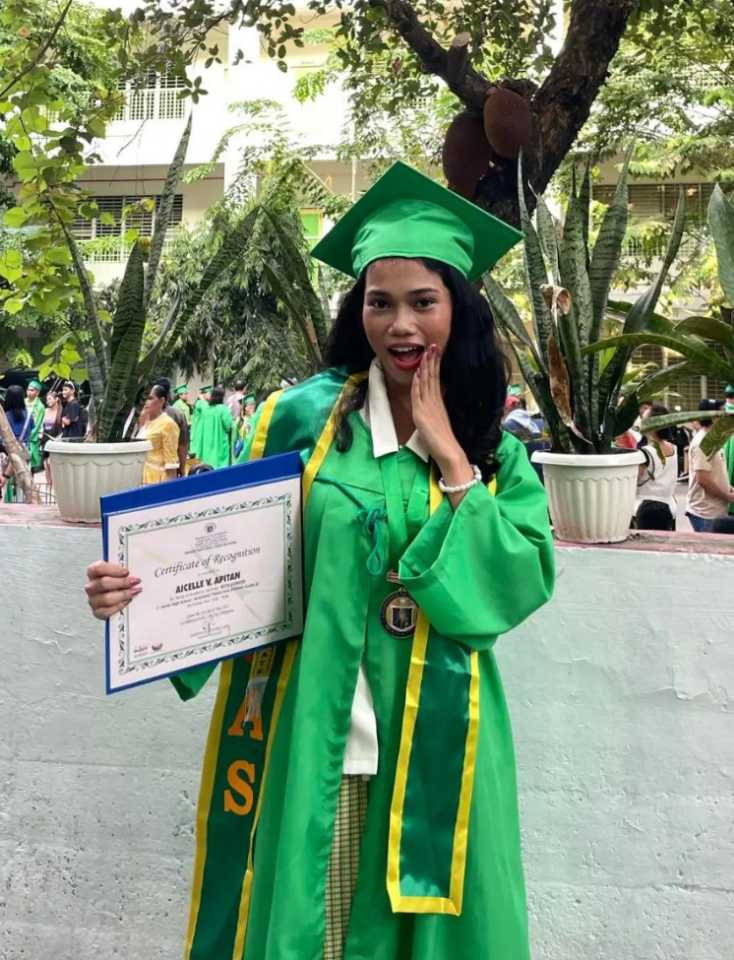
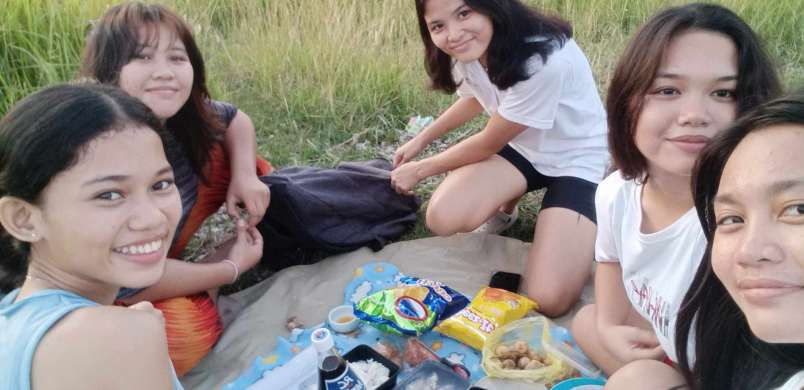
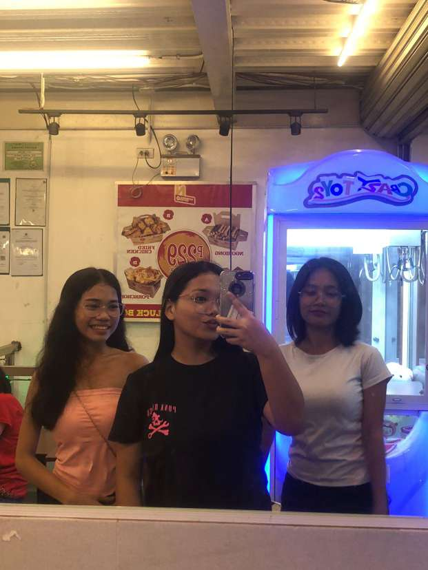
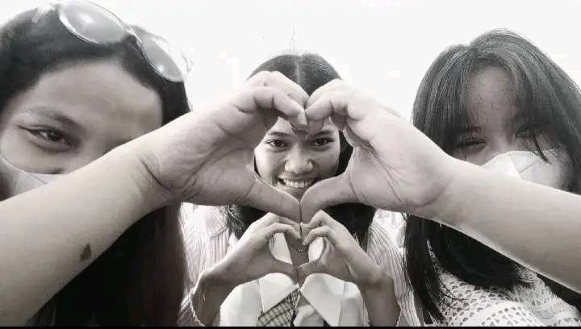
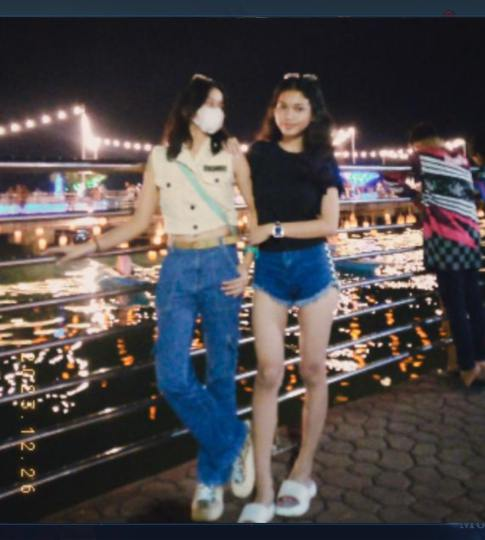

"This is our cheer dance. We're all girls here, and we were nervous because our dance stepping was simple.
However, we gave it all our best and didn't expect to win, but we did! It's worth it, all the hard work has paid off"

"This is my best friend from school. Our friendship began when we were in grade 11. I have so much fun with them.
I feel valued and appreciated, and they treat me more than a friend, like their sister or a part of their lives.
Sadly, when we were in grade 12, we were no longer classmates, but our friendship remained strong.
We still have a bond and are invited to each other’s houses. This kind of friendship is something
I will cherish forever, they hold a special place in my heart."

"Honestly, this is the first time in my life that I’ve been invited to a friend’s birthday. My life has been lonely,
and I’ve never had a long-term friend, they would use me and then leave. But this time is different because,
she has many closer friend but she invited me to her birthday even though were not very close.
And i was so happy to see her enjoying her celebration on this day."
"This is my unexpected circle of friends from grade 12. I’m the kind of person who doesn’t socialize much, but they
always approach me first. Even though I’m not always with them, they never forget me as their friend. I always
feel that I belong to this circle. It’s the best because we help each other academically, through
the ups and downs. This is during our graduation pictorial, my heart was overwhelmed. You can really
see the joy on our faces in the picture, excited and happy because, at last, we are graduated."

"This is my graduation picture. I can’t believe how quickly time has passed, it’s already graduation! I was happy
because I received a medal, although I feel like I don’t deserve it since I’m not particularly smart, just very
diligent. But I’m thankful at the same time. At last, I’ve completed senior high, and it’s all because of God,
I couldn’t have done it alone. I’m also grateful to my family for their unwavering support and love.
I am so grateful and thankful."

"This time was unexpected. It was a Sunday, and since we were bored at home, we decided to have a picnic in the
countryside. It was so much fun because the countryside we went to had a high area we had to walk up.
Even though it was unexpected, we managed to prepare some food. We just chatted and laughed until it got dark,
so we ended up watching a horror movie."

"This time, we went to KTV together because we all had broken hearts, and I really enjoyed this moment.
We sang and danced, feeling unbothered by the pain we were experiencing. We also drank some alcohol,
but not too much since we have low tolerance for it. Thanks to them, I was able to step out of my comfort
zone in a way that we talked about the things that were causing us pain. I really enjoyed this day."

"I love these girls so much. They are my shoulder to cry on, and I can easily share my problems with them.
They never get tired of giving me advice whenever I open up to them. Without judgment, they listen to all
of my thoughts about life. I am very thankful to have them in my life. I truly value them."

"My one and only baby, I love this person so much. She means everything to me, I don’t know how or when we
fell in love because it was unexpected. She loves and cares for me so deeply and has never complained about
anything she’s done for me. Through the ups and downs, we’ve been together. She is willing to take risks to be
with me, and she has always proven how much she loves me. My life has been complete since she came into it.
I am very lucky and grateful to have her in my life. I hope she’s doing okay rightnow and have the strength
to face difficulties in life. I miss you and I love you!"